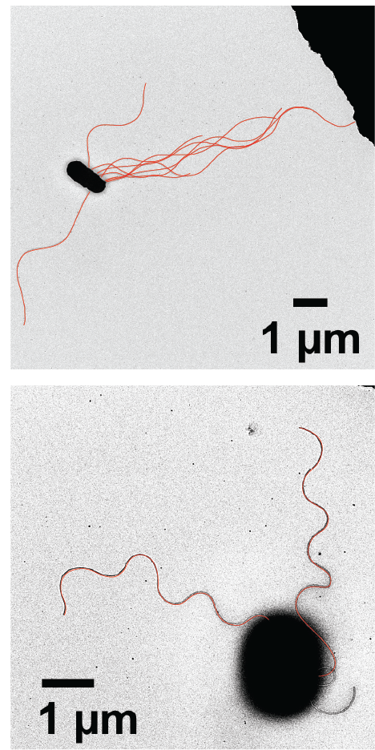

Experimental evolution reveals distinct flagellar strategies for enhanced motility in complex environments
Seiga Yanagisawa, Wayne Frasch, and Navish Wadhwa
Arizona State University
@WadhwaLab
Bacteria don't live in buffer


Their world is viscous, crowded, and structured
For a pathogen, these structured environments are the host — the mucus, tissue, and gut it must move through to establish infection
Bacteria swim by rotating helical flagella
 Slowed down 20X
Slowed down 20X

We understand swimming in liquid — far less about motility in viscous, structured environments. What tunes it there?
Experimental evolution selects for enhanced motility in soft agar


Motility is rapidly and heritably enhanced

1. Halo radius vs selection round, all WT lines (monotonic rise)
2. Overlay ΔmutL hypermutator lines (gain more, faster)
3. Frozen-stock heritability (re-inoculation retains enlarged halos)
halo-area-vs-selection-round.pdf (panels 1–2, rendered)
Panel 3 frozen-stock: data pending from Seiga
It's not just faster growth
Evolved lines don't grow faster in liquid — bigger halos aren't a growth-rate artifact
outputs/figure-panels/growth-curves/growth-curves-and-rates.pdf
Rules out a uniform shift in intrinsic growth rate (not in-agar growth-coupled expansion)
Selection repeatedly targets the flagellar system
Number route
flhDC promoter mutations
Shape route
fliC A438V / N441S
Chemotaxis
cheZ / cheW / cheR
Swimming speed in liquid does not predict motility in structured environments
outputs/figure-panels/swim-speed-ficoll-summary/swim-speed-ficoll-summary.pdf
mutL 20B swims faster, mutL C11A swims slower — yet both make larger halos
Selection drives morphological change

Evolved cells differ in flagellar number and filament shape — two routes
mutL 20B has more flagella


More flagella improve motility in soft agar

Inducible Ptac::flhDC: IPTG tunes flagellar number (~1–18/cell)
2026-05-06 Number of flagella per cell - VS1638 strain ...py (render)

More flagella → bigger halos
More flagella also give faster runs and straighter swimming (smaller reorientation angle). Strain courtesy of Victor Sourjik. [confirm strain: VS1638 vs VS1683]
The best flagellar number depends on viscosity
halo-area-vs-iptg_vs1683.pdf (+ _heatmap, _peak-halo)
2026-02-16_VS1683_swim_speed
Optimum drops with viscosity; at high viscosity the benefit collapses — a structured-environment-specific cost of too many flagella
More flagella help — with a viscosity-tuned optimum
… but that's only one of two routes
A second route: selection drives higher filament curvature

This line does not have more flagella — a different mechanical solution
A single flagellin mutation, A438V, raises curvature and enlarges halos


Plasmid complementation in ΔfliC isolates one residue as causal
A438V swims slower in liquid yet migrates better in agar
halo-area_flic-mutants (re-render)
2025-03-26_fliC_WT_vs_A438V_vs_N441S
The adaptive object is not speed — it's the propeller's shape
Flagellar filaments are polymorphic — switching is already part of normal motility

WT filaments already switch Normal (run) ↔ Semi-coiled/Curly (tumble) to unbundle. A438V is an evolved exaggeration of a switch cells already use.
A438V is a rotation-driven shape switch

A438V rotating

Semi-coiled at rest → Normal under rotation → snaps back when rotation stops or reverses
A programmable switch: design rules at the β-hairpin

Residue size at the C-D1 / β-hairpin interface predictably walks the waveform Normal → Semi-coiled → Curly

WT

A438V

V148L (Curly-locked)
Curly-locked (V148L / I156L) can't switch → non-motile, swims backward

Matches naturally Curly-locked E. coli ATCC10798 (fliC N87K), Kinosita et al., Sci. Rep. 2020
Evolution tunes the flagellum as a mechanical system, not for raw speed
Number — more flagella, faster runs / straighter swimming; optimum is viscosity-dependent
Shape — a flagellin switch (A438V) that trades liquid speed for structured-environment migration; necessary and finely tuned
Liquid swimming speed does not determine motility in complex environments
Implication for infection: how pathogens may tune flagellar function to move through host tissue

Acknowledgements
Wadhwa lab
Dr. Seiga Yanagisawa
Dr. Mrinmayee Bapat
Dr. Farhad Javi
Shabduli Sawant
Luis Meneses
Brennen Wise
Collaborators
Wayne Frasch (ASU)
Banu Ozkan (ASU)
Victor Sourjik (MPI Marburg) — Ptac::flhDC strain


N441S: a near-twin that doesn't help
halo-area_flic-mutants.pdf + 2025-03-26 swim data
Only difference found: slightly different twist (Δτ ≈ 3.7 vs 4.7 µm⁻¹). The benefit depends on the precise twist, not on switching per se — still open.
Waveform and liquid speed alone don't predict soft-agar motility
2025-09-19_fliC_beta_hairpin_mutants_swimming
Inducible strain reproduces the evolved kinematic signature
manuscript/figures/supp/run-tumble-vs1638-1.pdf, -2.pdf